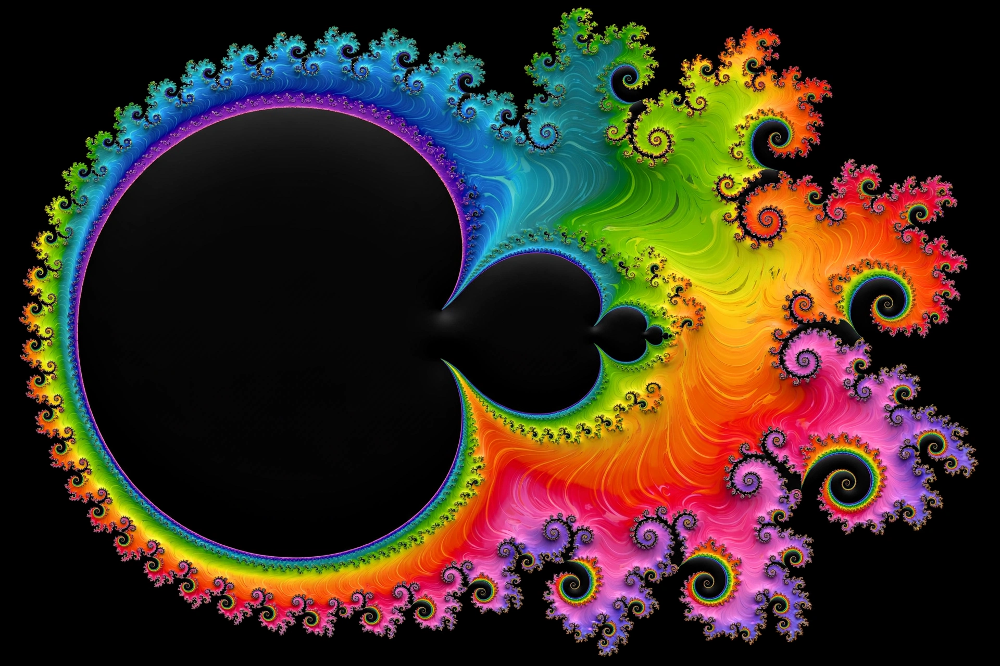

Mathematics

[Image: a colourful fractal — a Mandelbrot set with intricate spiralling detail at its boundary]Mathematics is an area of knowledge that includes the topics of numbers, formulas and related structures, shapes and the spaces in which they are contained, and quantities and their changes. These topics are represented in modern mathematics with the major subdisciplines of number theory, algebra, geometry and analysis, respectively. There is no general consensus among mathematicians about a common definition for their academic discipline.
Mathematical activity mostly consists of discovering and proving properties of abstract objects by pure reasoning. These objects are either abstractions from nature — numbers, figures, operations — or, in modern mathematics, entities stipulated with certain properties, called axioms. A proof consists of applications of deductive rules to already established results, including theorems, axioms and basic properties considered true starting points.
History
Mathematics developed from counting, calculation and measurement in prehistoric and ancient societies — Babylonian and Egyptian mathematics, then Greek mathematics, in which rigorous proof first became central, most famously in Euclid's Elements. Chinese, Indian and Islamic scholars made major advances — including decimal place value, the concept of zero, and algebra as a systematic discipline in the work of al-Khwarizmi. After a slow medieval period in Europe, growth accelerated in the Renaissance and the Scientific Revolution, with the invention of calculus by Isaac Newton and Gottfried Wilhelm Leibniz, and has continued explosively since.
Major subdisciplines
- Number theory — properties of numbers, especially integers and primes; it long resisted application, then became central to cryptography.
- Algebra — formulas, equations and abstract structures such as groups, rings and fields.
- Geometry — shapes, sizes and space, from Euclidean geometry to topology, the study of properties preserved under continuous deformation.
- Analysis — continuous change, built on calculus and limits.
- Discrete mathematics — combinatorics, graph theory and logic, underpinning computer science.
Applied mathematics
Mathematics is essential in the natural sciences, engineering, medicine, finance and the social sciences. Statistics and probability quantify uncertainty; optimisation and numerical analysis drive engineering design; mathematical physics, from the equations of general relativity to quantum mechanics, frames our deepest descriptions of nature. Eugene Wigner famously wrote of "the unreasonable effectiveness of mathematics in the natural sciences".
Famous problems
Landmark results and challenges include Fermat's Last Theorem (proved by Andrew Wiles in 1994), the Poincaré conjecture (proved by Grigori Perelman in the 2000s, who declined the prizes), and the still-open Millennium Prize Problems, each worth one million dollars from the Clay Mathematics Institute — listings and maths news appear on sites such as ams.org.